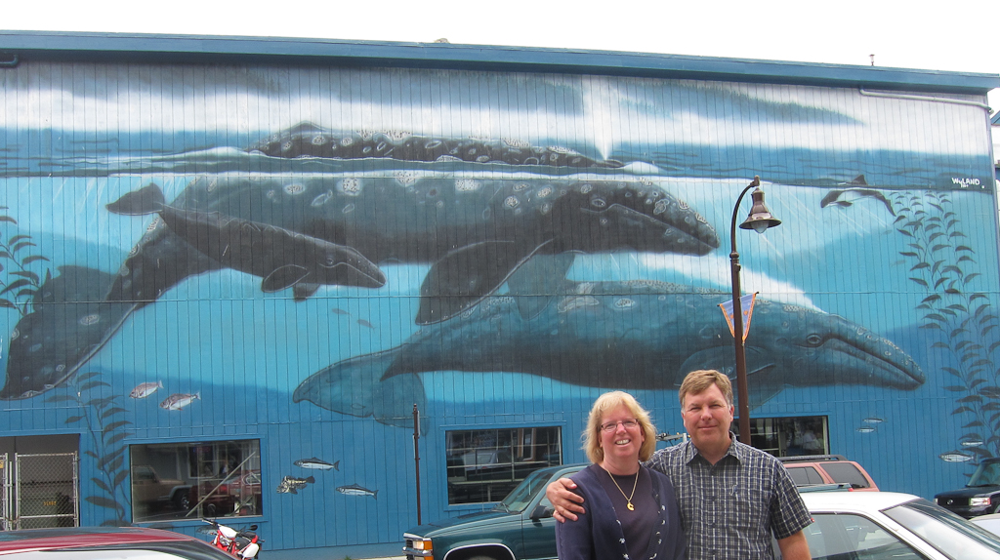

In Search of Wyland Walls

After our trip to Seattle, Victoria and Vancouver we had just about exhausted the west coast and had only one wall remaining. We had been wanting to visit Portland anyway so we took a few days and saw Portland with a quick day trip down to Newport. We love the aquarium in Newport but for this trip we had a goal of seeing “Gray Whales off Oregon Coast”. Many of the walls in Newport are adorned with murals but none as spectacular as this one. It was a great way to finish off the west coast.
Depoe Bay Fish Company
617 SW Bay Blvd.
Newport, Oregon
100 Feet Long x 35 Feet High
Dedicated August 29th, 1994
Excerpt from @wylandfoundation on Instagram
Newport, Oregon was one of those small but phenomenally enthusiastic communities where everyone rolled out the red carpet as we painted Whaling Wall 59.
This was a truly inspirational mural thanks, in part, to the U.S. Coast Guard, which escorted me and Dr Bruce Mate, one of the top marine biologists in the world, in a Zodiac along the Oregon coastline. We encountered gray whales five minutes out of the jetty in Newport. Then on the second day, the actual mist settled over the Oregon coast very much like I had envisioned it for the mural. There I was being exposed to all of my subjects and the environment I wanted to paint…I couldn’t have asked for more.
During the trip with Bruce, we saw many gray whales that were year-round residents. One of the local fisherman told me about a resident whale named ‘Scarback’ and he provided me with a photo. Unfortunately, the picture revealed a huge scar from a harpoon wound the whale had suffered several years earlier. I was so moved by the story that I included Scarback in the mural. I try whenever I can to include actual living whales in my murals as a tribute to their individuality, biology, and struggle for survival.